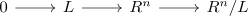

module as filtered colimit of finitely presented modules
Proposition
Let $R$ be a ring and $M$ an \(R\)-module. Then $M$ is an (iterated ?) filtered colimit of finitely presented modules
Proof
finitely generated module
using module as filtered colimit of finitely generated modules we may write
\begin{align*}
\mathrm{ker} \cong \mathrm{colim}_{L \subseteq \mathrm{ker}, \mathrm{ fin gen}}
\end{align*}
Using the Homomorphiesatz für Moduln we get
\begin{align*}
R^n/\mathrm{ker} \cong N
\end{align*}
Since colimits commute with colimits we conclude
\begin{align*}
N \cong& R^n/ \mathrm{ker} \\
\cong& \mathrm{colim} R^n/L
\end{align*}
Here each $R^n/L$ is choosen as finitely presented module for

general module
follows from
- finite product of filtered categories as filtered category
- module as filtered colimit of finitely generated modules